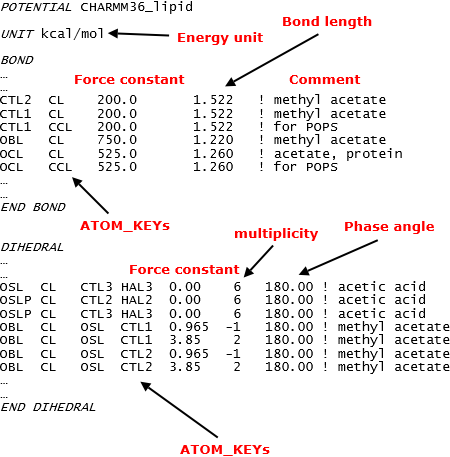

Force field data files 2¶

The Parameter file (par file)
These files have filenames in the form of DLPOLY_XX.par, where XX is the FF scheme name. The par files are where all the FF parameters are stored. The files contain all types of interactions with the exception of coulombic charges, which are defined for every ATOMs in the MOLECULEs.
All the parameters are enclosed within the appropriate directives according to the type of interactions. For example, for two-body bonding interactions, the parameters are listed within the BOND and END BOND directives; for three-body angle interactions, the parameters are listed within the ANGLE and END ANGLE directives, and so forth.
Diagram below shows a portion of bond and dihedral parameters, extracted from the DLPOLY_CHARMM36_lipid.par file. Words in red were added for illustration purposes.
{kind=link}
The POTENTIAL directive indicates the FF scheme is of CHARMM36_lipid. The UNIT directive shows the energy unit of the parameters, which in this case, is kcal/mol. If users wish to use other energy units in the dl_poly.FIELD file, this can be specified in the DL_FIELD control file. If needed, DL_FIELD will do automatic unit conversion during the FF model setup processes.
Note
The order how the parameters were shown in columns can be different from one FF scheme to the other. This depends on the potential functional forms used, and the way how the parameters were displayed in the original data files.
Lists of available directive that is applicable to the par files are shown below:
BOND, with END BOND
ANGLE, with END ANGLE
DIHEDRAL, with END DIHEDRAL
INVERSION, with END INVERSION
IMPROPER, with END IMPROPER
SHELL, with END SHELL
VDW, with END VDW
VDW_FIX, with END VDW_FIX
THREE_BODY, with END THREE_BODY
EQUIVALENCE, with END EQUIVALENCE
For more details how they are used, please refer to DL_FIELD user manual.
The user-define force field (udff) file
Allows user to add new force field information, such as new ATOM_TYPEs, MOLECULE templates and potential parameters. In addition, existing FF data from the sf* and par files can also be overriden. These actions can be carried out without tampering the library files.
For this reason, all DL_FIELD directives from the sf file and par file can be used in the udff file and all udff files must end with the extension .udff.
Note
Can only use one udff file at any one conversion. To use the udff file, just put the filename in the DL_FIELD control file.
For example, to override a set of angle parameters (shown in left):

Example below shows how to override a MOLECULE.